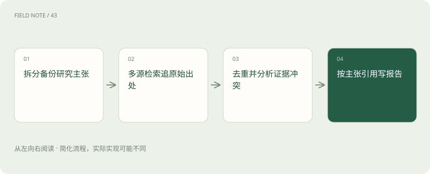
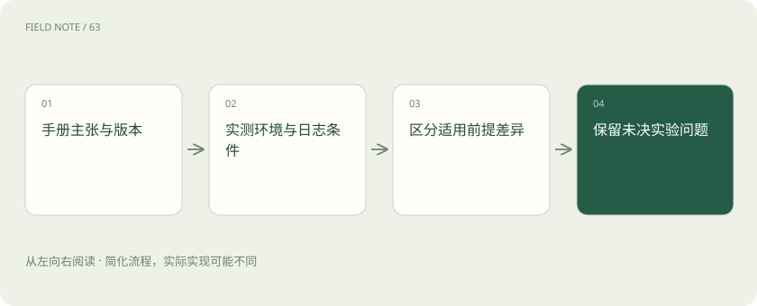

先读哪些知识
先用一个类比理解
类比只帮助建立直觉，不等同于技术的完整机制。
一图看懂

研究任务先拆主张
采购团队要比较两个数据库的备份恢复能力。先把问题拆成支持范围、恢复粒度、版本限制和实际恢复时长，说明这是功能核验而非购买建议。每项都需要对应证据；“整体领先”这种宽泛判断在没有统一测试条件时不应成为报告标题。
每个子问题标注希望证明的强度：功能存在可由版本手册支持，生产恢复时长需要可比测试。把这两种证据混合，会使报告从功能清单不知不觉跳到性能保证。
计划包含查询预算
先分配查询给官方手册、版本说明、故障边界和反例核验，预留一部分预算处理冲突。示例可限定十二次查询并记录每次解决的子问题。预算不是越多越好：连续搜索同一宣传词只会增加重复材料，缺少恢复失败案例时应调整查询方向。
查询台账可以列关键词、预期新增事实和实际收获。第四个搜索仍指向同一公告时，换成版本号加限制条件或已知故障词，而不是继续增加“最佳”“全面”之类宣传修饰。
多来源不等于独立
三家网站转载同一厂商公告，只能算一个事实来源。给材料记录原始发布者、转载关系、日期和测试环境，按证据谱系去重。独立测试也不自动更可靠；若版本过旧或数据规模不同，仍不能拿它证明当前版本在生产环境的恢复性能。
例如厂商公告被媒体和社区重复引用，它们在来源图中共享同一个根节点。真正独立材料需要新的观察或测试记录；作者不同、域名不同，都不足以证明证据彼此独立。
图解：独立来源的追溯
鲜度与适用范围
区分页面更新时间、功能引入版本和事件发生时间。最新博客可能描述旧版试验，旧手册可能仍适用于特定长期维护版本。报告中的“支持分钟级恢复”必须注明哪种备份模式与部署形态，不能从某一云版本推到所有本地部署。
为每条能力主张附上适用版本区间和查阅日。版本升级可能增加功能，也可能改变默认配置；旧结论需要重新检查前提，不能简单把文档发布日期替换成今天就视为更新。
冲突要拆条件
手册称支持时间点恢复，用户案例却说恢复失败，先检查日志保留、备份链完整性和目标版本。两者可能描述不同前提，无需强行选边。若同条件仍冲突，保留双方证据与待验证项，不能用更多同源文章投票消除实质差异。
建立冲突表：主张、证据A条件、证据B条件、能否共同成立、还缺什么。若缺少恢复日志，应把争议留为未决，而不是用语言润色把“未验证”改写成“基本可用”。
工具观察与思考展示
搜索结果、网页摘录和实验回执是可记录观察；报告可以展示计划、已完成步骤和证据摘要。截图里的 ChatModel:think、summary 等名称属于演示或实现约定，不是所有研究代理的统一标准，也不能据此声称系统能够访问模型私有思维链。
过程可观测性应关注检索词、来源列表、工具错误与决策摘要。这些足以帮助人复查研究动作，既无须承诺暴露内部推理，也不能把界面里显示的进度文字当成事实证据。
引用报告逐句验收
先写主张清单，再将每个关键句关联到直接支持它的页面与段落。比较表若把恢复目标写成五分钟，应核对原文是目标、典型案例还是保证。引用存在不代表引用支持结论；读者点开后必须能重建论证，未测试的推断应单独标识。
可借鉴Ragas的忠实度思想检查报告主张是否被所给材料支持，但它不证明材料本身真实，也不证明来源独立。独立性、版本适配和真实世界正确性还需要另外核验。
图解：冲突分析的底稿

停止条件与交付
当核心子问题已有适用版本的证据、主要冲突已解释且新增查询不再补足缺口，就形成报告。交付包含结论、证据、适用条件与未解决问题。若预算到期仍缺独立实测，应说明性能判断未成立；研究的完成是边界清楚，而非每个格子都填上确定答案。
本章查询配额、来源谱系与冲突表是可调整的研究设计建议，非统一产品标准。交付时应区分已证实功能、条件性推断与待实测指标，让下一轮研究直接从缺口开始。
放在一起对比
| 对象或路线 | 处理依据 | 适用边界或检查点 |
|---|---|---|
| 厂商手册 | 功能与约束 | 不能证明真实恢复时长 |
| 独立实测 | 特定环境的观察 | 不可直接推广全部规模 |
| 转载文章 | 发现原始公告 | 不能增加独立证据数 |
| 研究报告 | 条件化综合结论 | 须公开未决冲突 |
放进真实场景
甲手册称支持时间点恢复，乙测试报告称失败。核对后发现测试缺少连续日志，报告分别写出功能条件和测试失败原因；三篇转载甲公告的新闻不再计作三个支持来源。
别踩这个误区
想一想
引用充分能证明研究结论可靠吗？
不能。引用还需直接支持句子，来源须符合版本和场景；材料真实性、独立性及冲突解释都应另外检查。
关联阅读
资料与边界
本文为原创知识讲解。类比和图示经过简化；示例数字不代表实测或报价。整理日期：2026-11-05。文末列出对应技术的原始资料，具体功能与版本支持请以原文为准。